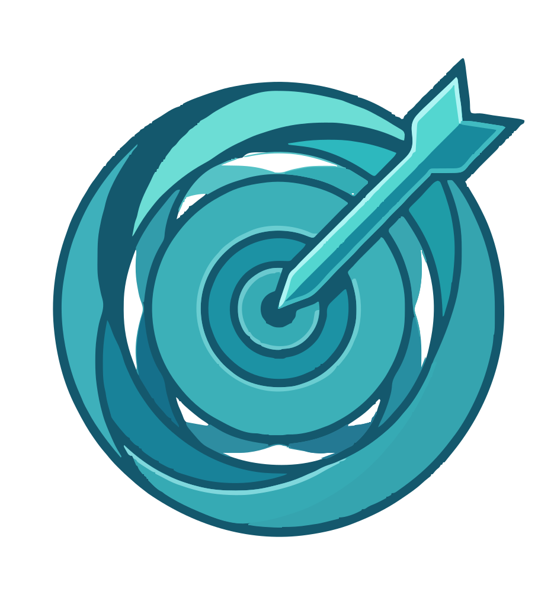
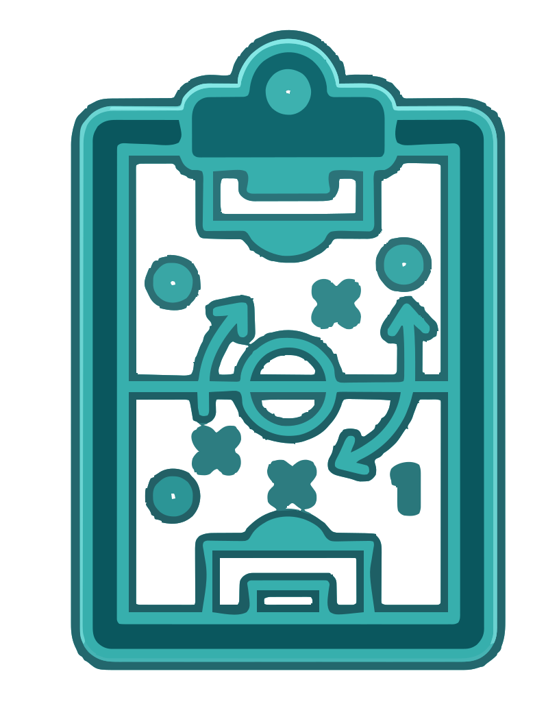

Destino Ideal
Decida para onde ir e organize tudo em um só lugar.
Decida para onde ir e organize tudo em um só lugar.
Leitura bíblica guiada e preparo de estudos, tudo em um app.

Defina uma meta, um prazo, e saiba exatamente quanto guardar.
Suas notícias esportivas, sempre em dia.

Tudo sobre o seu grupo de futebol, em um único app.
Prontuário digital simples, com seus dados sempre com você.